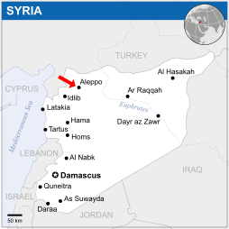

Image from Wikipedia

Aleppo
This ancient, industrious city has seen destruction from civil war fighting and an
earthquake in 2023. Refugees poured out of the city. This map showcases photographs
from across the area. Included are images of pre-destruction, post-destruction,
and reconstruction efforts.
Syrian Civil War
The fighting in Aleppo was focused from 2012-2016. blank, blank, and blank
were used. There was 3 more days of fighting again in November 2024 with the Assad
regime falling shortly after.
2023 Earthquake
A 7.8 magnitude earthquake struck Turkey and Syria on February 6th, 2023. This was
even more disastrous than the fighting from the civil war.
Concentration of Attention
Most of the international attention is focused on the famous Old City. This can be seen
by the majority of markers placed in the middle of the city. Although important, this
detracts from the crisis that returning refugees face in the rest of the city.